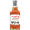
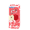
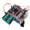
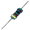
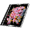
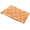
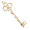

Key Or Trap ルール
目次
ルーム設定
- ゲームルール
- マップの広さ
- 折り返し
- エンチャント
20/30/40/50から大きさを選択できる。初期は30。
マップの右端をゴールにするか、そこで折り返し左端をゴールとするかどうかを選択できる。
初期にランダムでマスにエンチャントを行うかどうかを選択できる。
ゲームモード
コスト消費
コストを消費して、マスを設置する。
また設置のフェーズ最後には、コストを消費して鍵系のアイテムも購入できる。
全プレイヤーが鍵系のアイテムの購入を終了すると、移動のフェーズに移る。
移動のフェーズでは、ダイスか鍵の使用ができる。
配置フェーズの順番とは逆で、移動のフェーズは行動する。
ゴールに先にたどり着けば勝ち。
アイテム収集
いくつかのイベントや効果マスでアイテムを収集しながらゴールを目指す。
1ターンで選択イベント、配置、移動を行う。
1ターン数は必ず特殊マスを配置する。
決まったターン数まで配置は可能で、それ以降は配置できない。
ゴールに先にたどり着けば勝ち。
効果マス一覧
基本効果マス
| 名前 | 効果 | コスト/レアリティ | 再配置 |
|---|---|---|---|
| Right1 | 右に1マス進む | 1 | 2.5周 |
| Right2 | 右に2マス進む | 2 | 3周 |
| Right3 | 右に3マス進む | 3 | 3.5周 |
| Left1 | 左に1マス進む | 1 | 2.5周 |
| Left2 | 左に2マス進む | 2 | 3周 |
| Left3 | 左に3マス進む | 3 | 3.5周 |
基本戦術マス
| 名前 | 効果 | コスト/レアリティ | 再配置 | シールド | 次の移動時、止まったマスの効果を無効化する | 1 | 2.5周 |
|---|---|---|---|
| デストロイ | 周囲1マスを破壊する(通常の再配置時間に入る) | 2 | 3周 |
| リーク | ビーコンレーダーを獲得する | 3 | 3.5周 |
| ダミー | 効果はない | 1 | 2.5周 |
| キー | ランダムなKey系アイテムを獲得する | 2 | 3周 |
| バック | 次の移動の進行方向が反転する | 3 | 3.5周 |
アイテム解放系
| 名前 | 効果 | 解放アイテム | コスト/レアリティ | 再配置 |
|---|---|---|---|---|
| アイテム | ランダムなアイテムを獲得する | ルーレット装置 | 1 | 2.5周 |
| トレーダー | トレードイベントが起こる | 移動販売車 | 2 | 3周 |
| ガード | 周囲3マスにエンチャント:key無効化を展開/収束する(このマスを踏むと切り替わる) | レジャーシート | 4 | 4周 |
| リバイブ | 周囲3マスの再配置時間が2周進む | 復活したバンドのCD | 4 | 4周 |
| イレース | 周囲2マスの範囲にエンチャント:忘却を付与 | 高性能な高圧洗浄機 | 4 | 4周 |
| ブースト | 次の移動が2マス追加される | ローラーシューズ | 4 | 4周 |
特殊マス-設置者に関連する効果を持つ
| 名前 | 効果 | コスト/レアリティ | 再配置 |
|---|---|---|---|
| ライトN | 踏んだら右に1から5マス進む。効果初同時に設置者が選択。 | 5 | 4.5周 |
| レフトN | 踏んだら左に1から5マス進む。効果初同時に設置者が選択。 | 5 | 4.5周 |
| ライト/レフトN | 踏んだら左右に0から2マス進む。効果初同時に設置者が選択。 | 5 | 4.5周 |
| スワップ | 設置者と位置を入れ替える。 | 5 | 4.5周 |
その他のマス
| 名前 | 効果 | コスト/レアリティ | 再配置 |
|---|---|---|---|
| ミステリー | ミステリーイベントがランダムで起こる | 1 | 2.5周 |
| 通常マス | 効果を配置できる | X | 2周 |
アイテム一覧
50種類ぐらいある
| 画像 | アイテム名 | 効果 | 入手方法 | 割り当て |
|---|---|---|---|---|
| 映画のチケット | トレードイベントで選ばれるアイテムを1/2/3/...回まで再抽選できる。(1枚消費) | Itemマス、通常取引(2、3段目) | 通常系/消費 | |
| 金属製の盾 | トレードイベントやエンチャント:ロストで優先的に消費される。 | Itemマス、選択イベント、通常取引(2、3段目) | 通常系/消費 | |
| ビーコンレーダー | 自分の周囲1/2/3/...マス以内にある効果マスを公開する（自分の効果マスは対象外） | Leakマス、Itemマス、選択イベント、通常取引(2、3段目) | 通常系/永続 | |
| 領収書 | トレードイベントでの通過確率が1/2/3/...%上昇する代わりに、試行回数が1回減少する | Itemマス、選択イベント、通常取引(2、3段目) | 通常系/永続 | |
| マイク | トレードイベントでの通過試行回数が1/2/3/...回上昇する代わりに、1/2/3/...回目までの確率が24%減少する | Itemマス、選択イベント、通常取引(2、3段目) | 通常系/永続 | |
| 飛行機の搭乗券 | トレードイベントで失敗をした際に10.0/19.0/27.1/...%の確率で支払ったアイテムを返却する代わりに、1回目に必ず失敗する | Itemマス、選択イベント、通常取引(2、3段目) | 通常系/永続 | |
| 手帳 | トレードイベントでの通過試行回数が3回上昇する代わりに、4回目までの通過確率が90.0/81.0/72.9/...%減少する | Itemマス、選択イベント、通常取引(2、3段目) | 通常系/永続 | |
| ラッキーサングラス | ランダムアイテムを貰える時、20/40/60/80/0/20/40/...%の確率で1つ追加。さらに確定で0/0/0/0/1/1/1/...個追加。 | Itemマス、選択イベント、通常取引(2、3段目) | 通常系/永続 | |
| 鍵鋳造キット | 次の移動時に、10.0/19.0/27.1/...%の確率でランダムで鍵がもらえる。 | Keyマス、Itemマス、通常取引(2、3段目) | 通常系/永続 | |
 |
メンバーズカード | トレードイベントの裏取引を開放(1つ消費) | Itemマス、選択イベント、通常取引(2、3段目) | 通常系/永続 |
| フルーツリキュール | 次★1を設置する際、その効果マスにエンチャント:短縮再配置を付与（1つ自動消費、優先度:高） | Itemマス、選択イベント | 配置系/消費 | |
| ウィスキー | 次★2を設置する際、その効果マスにエンチャント:短縮再配置を付与（自動消費、優先度:高） | Itemマス、選択イベント、通常取引(2、3段目) | 配置系/消費 | |
|  | テキーラ | 次★3を設置する際、その効果マスにエンチャント:短縮再配置を付与（1つ自動消費、優先度:高） | Itemマス、選択イベント、通常取引(2、3段目) | 配置系/消費 |
| エナジードリンク | 次★1を設置する際、その効果マスにエンチャント:x2を付与（1つ自動消費） | Itemマス、選択イベント、通常取引(2、3段目) | 配置系/消費 | |
| サクサクポテチ | 次★2を設置する際、その効果マスにエンチャント:強制停止を付与（1つ自動消費） | Itemマス、選択イベント、通常取引(2、3段目) | 配置系/消費 | |
|  | リンゴジュース | 次★4を設置する際、その効果マスにエンチャント:x2を付与（1つ自動消費） | Itemマス、選択イベント、通常取引(2、3段目) | 配置系/消費 |
|  | エンチャント送信回路 | 次の配置時にそのマスにエンチャントがない場合、10.0/19.0/27.1/...%の確率でランダムでエンチャントを付与。 | Keyマス、Itemマス、通常取引(2、3段目) | 配置系/永続 |
| ごみ袋 | 次★3を配置時、その効果マスにエンチャント:ロストを付与。(1つ自動消費) | Itemマス、選択イベント、通常取引(2、3段目) | 配置系/消費 | |
| 手提げバック | トレードイベントで選ばれるアイテムの獲得上限を1/2/3/...追加する。(初期:2) | Itemマス、通常取引(2、3段目) | 限定系/永続 | |
| ブラックボックス | トレードイベントで選ばれるアイテムの獲得下限を1/2/3/...追加する。(初期:1、獲得上限は超えない) | Itemマス、通常取引(2、3段目) | 限定系/永続 | |
| フェライトコアコイル | 消失中の通過したマスの再配置時間が1/2/3/...ターン増加される。 | 限定取引 | 限定系/永続 | |
| 電解コンデンサ | 消失中の通過したマスの再配置時間が1/2/3/...ターン減少される。 | 限定取引 | 限定系/永続 | |
|  | 1kΩの抵抗器 | 配置した効果マスが消失したとき、再配置時間が1/2/3/...周追加される。 | 限定取引 | 限定系/永続 |
 |
スーツケース | ゴールができるように、進行方向反転 | 折り返しマス | 限定系/永続 |
| 移動販売車 | 効果マス：Traderを配置可能に この効果は全体に公開された状態で配置される（1つ自動消費） | Itemマス、選択イベント、通常取引(1段目) | 追加マス系/消費 | |
|  | 復活したバンドのCD | 効果マス：Revaivalを配置可能に この効果は全体に公開された状態で配置される（1つ自動消費） | Itemマス、選択イベント、通常取引(1段目) | 追加マス系/消費 |
| ルーレット装置 | 効果マス：Itemを配置可能に この効果は全体に公開された状態で配置される（1つ自動消費） | Itemマス、選択イベント、通常取引(1段目) | 追加マス系/消費 | |
|  | レジャーシート | 効果マス：Guardを配置可能に この効果は全体に公開された状態で配置される（1つ自動消費） | Itemマス、選択イベント、通常取引(1段目) | 追加マス系/消費 |
| 高性能な高圧洗浄機 | 効果マス：Eraseを配置可能に この効果は全体に公開された状態で配置される（1つ自動消費） | Itemマス、選択イベント、通常取引(1段目) | 追加マス系/消費 | |
| ローラーシューズ | 効果マス：Boostを配置可能に この効果は全体に公開された状態で配置される（1つ自動消費） | Itemマス、選択イベント、通常取引(1段目) | 追加マス系/消費 | |
| 影響中：逆転 | ダイスや鍵の移動時、進行方向に影響を与える。奇数個で逆方向、偶数個で順方向。（次の移動で全消費） | Backマス、'反転'の鍵、'異変'の鍵 | 影響系 | |
| 影響中：key使用禁止 | 鍵の使用を禁止する。個数は、持続ターン数を示す。 | エンチャント:key無効化 | 影響系 | |
| 影響中：推進 | 次の移動が2マス増加。個数は、持続ターン数を示す。 | Backマス、'反転'の鍵、'異変'の鍵 | 影響系 | |
| 影響中：抑制 | 次の移動が2マス減少。個数は、持続ターン数を示す。 | --未実装-- | 影響系 | |
| 影響中：効果無効 | 次の移動で、マスの効果とエンチャントの影響を受けない。個数は、持続ターン数を示す | Shieldマス | 影響系 | |
| 影響中：帰還 | 次の移動が終了したとき、移動前の位置に戻る。個数は、持続ターン数を示す。 | --未実装-- | 影響系 | |
|  | 0 の鍵 | ダイスを振らず、0を宣言でき、移動しない。（1つ消費) | Itemマス、鍵鋳造キット、通常取引(2、3段目) | 鍵系/消費 |
| 1 の鍵 | ダイスを振らず、1を宣言できる。（1つ消費) | Itemマス、鍵鋳造キット、通常取引(2、3段目) | 鍵系/消費 | |
| 2 の鍵 | ダイスを振らず、2を宣言できる。（1つ消費) | Itemマス、鍵鋳造キット、通常取引(2、3段目) | 鍵系/消費 | |
| 3 の鍵 | ダイスを振らず、3を宣言できる。（1つ消費) | Itemマス、鍵鋳造キット、通常取引(2、3段目) | 鍵系/消費 | |
| 復活 の鍵 | 任意のマスを復活させる（1つ消費) | Itemマス、鍵鋳造キット、通常取引(2、3段目) | 鍵系/消費 | |
| 消失 の鍵 | 任意の効果マスを再配置されない状態で消失させる(1つ消費) | Itemマス、鍵鋳造キット、通常取引(2、3段目) | 鍵系/消費 | |
| 反転 の鍵 | このターンの移動時、進行方向を反転させる(1つ消費) | Itemマス、Backマス(エンチャント:x2)、鍵鋳造キット、通常取引(2、3段目) | 鍵系/消費 | |
| 異変 の鍵 | 自分以外が次の移動時、進行方向を反転して進む(1つ消費) | Itemマス、鍵鋳造キット、通常取引(2、3段目) | 鍵系/消費 | |
| 公開 の鍵 | 指定したマスを全員に公開する(1つ消費) | --未実装-- | 鍵系/消費 | |
| 抑制 の鍵 | 次の移動が2マス減少する(1つ消費) | --未実装-- | 鍵系/消費 | |
| 帰還 の鍵 | 次の移動が終了したとき、移動前の位置に戻る(1つ消費) | --未実装-- | 鍵系/消費 | |
| 使用禁止 の鍵 | 次の移動が終了したとき、移動前の位置に戻る(1つ消費) | --未実装-- | 鍵系/消費 | |
| 無効 の鍵 | 鍵の使用を禁止する(1つ消費) | --未実装-- | 鍵系/消費 |
エンチャント一覧
効果マスに対する副次的な効果で、このマスに効果があるとき二のみ効果がある。
| エンチャント名 | 効果 |
|---|---|
| 強制停止 | このマスに効果があるとき、通過しようとしたプレイヤーは強制的に停止し効果を受ける このマスの効果が発動すると、マスが消失する(再配置されない) |
| 短縮再配置 | このマスの配置時間が半分に短縮される |
| 忘却 | このマスの効果とエンチャントを消し、通常マスにする |
| key無効化 | このマスに対する鍵の使用をを無効化する |
| x2 | このマスの効果を2倍にする(ただし、再配置時間も2倍になる) |
| ロスト | このマスの効果を受けたとき、ランダムなアイテムを1-4個失う |
イベント一覧
選択イベント
- 限定系アイテム以外のアイテムの中からランダムに2つのアイテムが選ばれる。個数もランダム(初期では最高2つ)。
トレードイベント
- 限定系アイテム以外のアイテムの中からランダムに2つが
ミステリーイベント
- 「未知の物」
- 「増量キャンペーン」
- 「勝利の鍵」
通過確率:20%
失敗時増加確率:5%
試行可能回数:6
イベント通過でブラックボックス獲得ができるイベント
通過確率:10%
失敗時増加確率:15%
試行可能回数:3
イベント通過で手提バックが獲得ができるイベント
通過確率:30%
失敗時増加確率:0%
試行可能回数:4
イベント通過で鍵鋳造キットが獲得ができるイベント